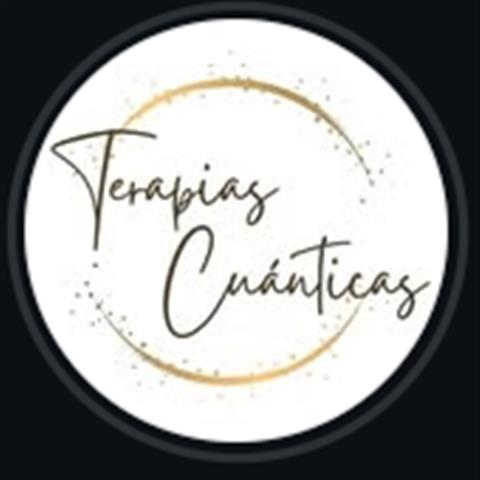

Hipnosis clínica reparadora · Córdoba y online
Tu pasado forma parte de tu historia, pero no tiene por qué dirigir tu presente
Soy Nora Urbani. Te acompaño con distintas propuestas para abordar aquello que sentís que está condicionando tu realidad: física, mental, emocional, energética y espiritual.
Los botones de contacto se activan cuando arrancamos con la versión oficial.
Sesión individual de hipnosis clínica reparadora
Encuentro grupal Conexión con tu Ser
Online y presencial en Córdoba
Más de 2.100 personas siguen a Nora en Instagram
Un espacio individual
Tratar los traumas desde el origen
Es un espacio para trabajar patrones emocionales, miedos, inseguridades, pensamientos repetitivos y estrés. Todo aquello que sentís que necesitás transformar, para que no condicione tu presente.
“Hay experiencias que dejan huellas profundas en nuestra historia. Emociones que no pudimos expresar.”
Los botones de contacto se activan cuando arrancamos con la versión oficial.
Propuestas
Cuatro caminos para acompañarte
Qué trabajar
¿Qué sentís que necesitás transformar?
- Traumas y heridas que permanecen
- Patrones emocionales que se repiten
- Miedos e inseguridades
- Pensamientos repetitivos
- Estrés
- Emociones que no pudieron ser expresadas
Si no sabés por dónde empezar, escribile y contale qué te está pasando.
Cómo empezar
Tu primera sesión, en tres pasos
- I
Elegí cómo querés trabajar
Una sesión individual o el encuentro grupal Conexión con tu Ser.
- II
Escribile a Nora
Reservá tu sesión por mensaje y sacate las dudas.
- III
Coordinan la sesión
En Córdoba o con atención online.
Reservas
Hoy puede ser el primer paso para soltar lo que te condiciona
- Dónde
- Córdoba, y atención online
- 3571 55-3176
- @terapiascuanticasarg
Los botones de contacto se activan cuando arrancamos con la versión oficial.